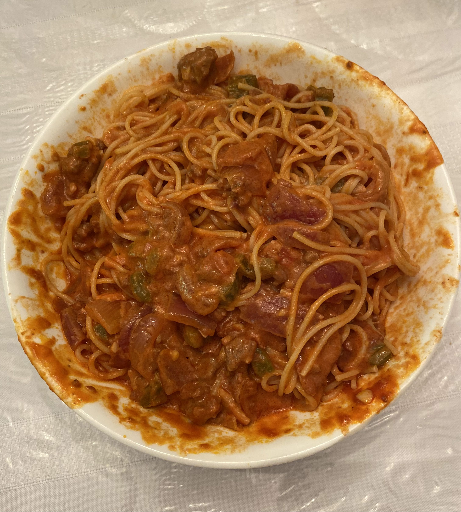

Sorta "Bolognese" Pasta

Ingredients
- 1 jar of tomato (pasta, if possible) sauce
- 1 slab of ground beef
- 1 bell pepper
- salt, pepper, misc. seasoning to taste
- half a head of garlic
- 1 onion (yellow, red, doesn't matter)
- noodles to boil... choose a shape that makes you happy :)
Tools and when to use them...
- Wooden spatula (without holes)
- To cook the sauce
- To keep pasta in the pot when draining water away
- To serve the pasta
- To taste the sauce (if cooking for only yourself)
Optional:
- 2 jalapeños
- bacon
- misc. diced vegetables
-
good options are carrots, cauliflower, etc. You want more fibre? BOOM, it's fibre.
- additional clove of garlic
Steps:
- Dice onion, bell pepper, other optional vegetables into ~1cm cubes
- Using a garlic crusher or by hand, mince garlic
- Heat up large pot on medium heat. Once the pot is hot, put the ground beef into the pot. Cook the ground beef until it is no longer pink.
- Put onion, bell peppers, garlic, other vegetables into the pot. Cook until it's less liquidy.
- Pour in the can of pasta sauce into the pot
- Mix the food in the pot and cover
- Change heat to low and let the pasta sauce simmer, mixing every 10 minutes
- As the pasta sauce simmers, boil some water. Once the water has boiled, add in the pasta noodles, and cook as described in the instructions.
- Hot tip: if you're prepping your food, leaving the noodles in the sauce can leave em soggy. If you cook the noodles and leave the cooked noodles in a separate container, the noodles will not get soggy. Mix the pasta and sauce the morning/night before your meal